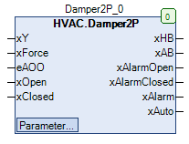

Damper2P (FB)¶
FUNCTION_BLOCK Damper2P
Kurzbeschreibung¶
Steuerung eines binären Klappenantriebs mit zwei PositionsrückmeldungenTypische Anwendung: Außen- und Abluftklappen einer RLT-Anlage
Darstellung¶

Schnittstellen¶
Eingänge¶
Name Datentyp Wertebereich Initialwert Funktion xY BOOL Stellsignal xForce BOOL FALSE Zwangsübersteuerung nach Handübersteuerung eAOO HVACTYPES.eManBin HVACTYPES.eManBin.Auto, HVACTYPES.eManBin.ManOff, HVACTYPES.eManBin.ManOn HVACTYPES.eManBin.Auto Betriebsart der Handübersteuerung - Hardware xOpen BOOL Rückmeldung Klappenöffnung xClosed BOOL Rückmeldung Klappenschliessung
Ausgänge¶
Name Datentyp Wertebereich Initialwert Funktion xHB BOOL Freigabe Klappenantrieb nach Handübersteuerung xAB BOOL Freigabe Klappenantrieb vor Handübersteuerung xAlarmOpen BOOL Störung Position Klappenöffnung xAlarmClosed BOOL Störung Position Klappenschliessung xAlarm BOOL Sammelstörung xAuto BOOL Sammelmeldung Automatikbetrieb
Sollwerte / Parameter¶
Name Datentyp Wertebereich Initialwert Funktion udiControlTime UDINT 10s ... 600s 150s Meldeverzögerung der Positionsüberwachung xControl BOOL TRUE Freigabe der Positionsüberwachung xForceOption BOOL FALSE Zustand vom Ausgang xHB bei Zwangsübersteuerung eManModeB eMANBIN eMANBIN.Auto, eMANBIN.ManOff, eMANBIN.ManOn eMANBIN.Auto Betriebsart der Handübersteuerung für den digitalen Ausgang xHB
Funktionsbeschreibung¶
Automatik-Ausgang xAB¶
Die Freigabe des Klappenantrieb vor Handübersteuerung xAB wird unverändert vom Freigabeeingang xY übernommen.
Hand-Ausgang xHB¶
Die Freigabe des Klappenantrieb nach Handübersteuerung xHB entspricht der Freigabe des Klappenantrieb vor Handübersteuerung xAB
zusätzlich erweitert um ein Handübersteuermodul und einer Zwangsübersteuerung.
xAB eManModeB xForce xForceOption xHB Hinweise FALSE eMANBIN.Auto FALSE X FALSE Handübersteuermodul in Automatik TRUE eMANBIN.Auto FALSE X TRUE Handübersteuermodul in Automatik X eMANBIN.ManOff FALSE X FALSE Handübersteuermodul im Handbetrieb Aus X eMANBIN.ManOn FALSE X TRUE Handübersteuermodul im Handbetrieb Ein X X TRUE FALSE FALSE Zwangsübersteuerung Zu X X TRUE TRUE TRUE Zwangsübersteuerung Auf
Legende: X = beliebig
Störung Position Klappenöffnung xAlarmOpen¶
Die Störmeldung für die Position bei der Klappenöffnung xAlarmOpen wird aktiviert ( xAlarmOpen = TRUE ), falls folgende Bedingungen gleichzeitig erfüllt sind:
1) Die Freigabe der Positionsüberwachung xControl ist freigegeben ( = TRUE )
2) Als Betriebsart der Handübersteuerung - Hardware eAOO ist der Automatikbetrieb ausgewählt ( eAOO = HVACTYPES.eManBin.Auto )
3) Die Zustände der Freigabe des Klappenantrieb nach Handübersteuerung xHB und der Rückmeldung für die Klappenöffnung xOpen sind mindestens
während der Meldeverzögerung der Positionsüberwachung udiControlTime durchgehend unterschiedlich ( ( xHB = FALSE und xOpen = TRUE ) ODER ( xHB = TRUE und xOpen = FALSE ) ).
Die Störmeldung für die Position bei der Klappenöffnung xAlarmOpen wird deaktiviert, falls mindestens eine der oben stehenden Bedingungen nicht mehr erfüllt ist.
Störung Position Klappenöffnung xAlarmClosed¶
Die Störmeldung für die Position bei der Klappenöffnung xAlarmClosed wird aktiviert ( xAlarmClosed = TRUE ), falls folgende Bedingungen gleichzeitig erfüllt sind:
1) Die Freigabe der Positionsüberwachung xControl ist freigegeben ( = TRUE )
2) Als Betriebsart der Handübersteuerung - Hardware eAOO ist der Automatikbetrieb ausgewählt ( eAOO = HVACTYPES.eManBin.Auto )
3) Die Zustände der Freigabe des Klappenantrieb nach Handübersteuerung xHB und der Rückmeldung für die Klappenschliessung xClosed sind mindestens
während der Meldeverzögerung der Positionsüberwachung udiControlTime durchgehend gleich ( ( xHB = TRUE und xOpen = TRUE ) ODER ( xHB = FALSE und xOpen = FALSE ) ).
Die Störmeldung für die Position bei der Klappenöffnung xAlarmClosed wird deaktiviert, falls mindestens eine der oben stehenden Bedingungen nicht mehr erfüllt ist.
Sammelstörung xAlarm¶
Die Sammelstörung xAlarm wird aktiviert ( = TRUE ), falls mindestens eine der beiden Störungen für die Positionen der Klappe ( xAlarmOpen und xAlarmClosed ) aktiv ist.
In alle übrigen Fällen ist die Sammelstörung xAlarm nicht aktiviert ( = FALSE ).
Sammelmeldung Automatikbetrieb xAuto¶
Die Sammelmeldung Automatikbetrieb xAuto wird aktiviert ( = TRUE ), falls der Eingang eAOO den Wert HVACTYPES.eManBin.Auto und der Sollwert / Parameter eManModeB
den Wert eMANBIN.Auto enthält.
In alle übrigen Fällen ist die Sammelmeldung Automatikbetrieb xAuto nicht aktiviert ( = FALSE ).
Zwangsübersteuerung xForce¶
Die Zwangsübersteuerung wirkt direkt auf den Ausgang xHB. Mit dem Parameter xForceOption wird festgelegt, welchen Zustand der Ausgang xHB bei TRUE am Eingang xForce einnimmt.
Visualisierung¶
Codesys¶
- InOut:
Scope Name Type Initial Comment Input xY BOOL Stellsignal xForce BOOL FALSE Zwangsübersteuerung nach Handebene eAOO eManBin HVACTYPES.eManBin.Auto Betriebsart der Handübersteuerung - Hardware xOpen BOOL Rückmeldung Klappenöffnung xClosed BOOL Rückmeldung Klappenschliessung Output xHB BOOL Freigabe Klappenantrieb nach Handübersteuerung xAB BOOL Freigabe Klappenantrieb vor Handübersteuerung xAlarmOpen BOOL Störung Position Klappenöffnung xAlarmClosed BOOL Störung Position Klappenschliessung xAlarm BOOL Sammelstörung xAuto BOOL Sammelmeldung Automatikbetrieb Input udiControlTime UDINT 200 Meldeverzögerung der Positionsüberwachung xControl BOOL TRUE Freigabe der Positionsüberwachung xForceOption BOOL FALSE Zustand vom Ausgang xHB bei Zwangsübersteuerung eManModeB eMANBIN eMANBIN.Auto Betriebsart der Handübersteuerung für den digitalen Ausgang xHB